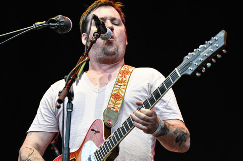

Modest Mouse

Modest Mouse is an American indie rock band formed in 1993 in Issaquah, Washington, by singer/guitarist Isaac Brock, drummer Jeremiah Green, and bassist Eric Judy. Since their 1996 debut album, This Is a Long Drive for Someone with Nothing to Think About, their lineup has centered around Brock, Green, and Judy. Guitarist Johnny Marr (formerly of The Smiths) joined the band in May 2006, along with percussionist Joe Plummer (formerly of The Black Heart Procession) and multi-instrumentalist Tom Peloso, to work on the album We Were Dead Before the Ship Even Sank. Guitarist Jim Fairchild joined the band in February 2009. Their name is derived from a passage from the Virginia Woolf story "The Mark on the Wall" which reads, "I wish I could hit upon a pleasant track of thought, a track indirectly reflecting credit upon myself, for those are the pleasantest thoughts, and very frequent even in the minds of modest, mouse-coloured people, who believe genuinely that they dislike to hear their own praises
Courtesy of Wikipedia